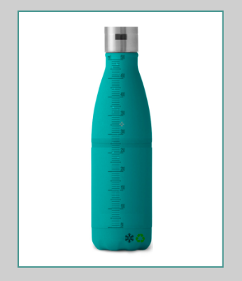
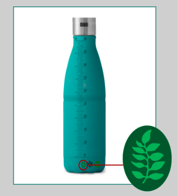
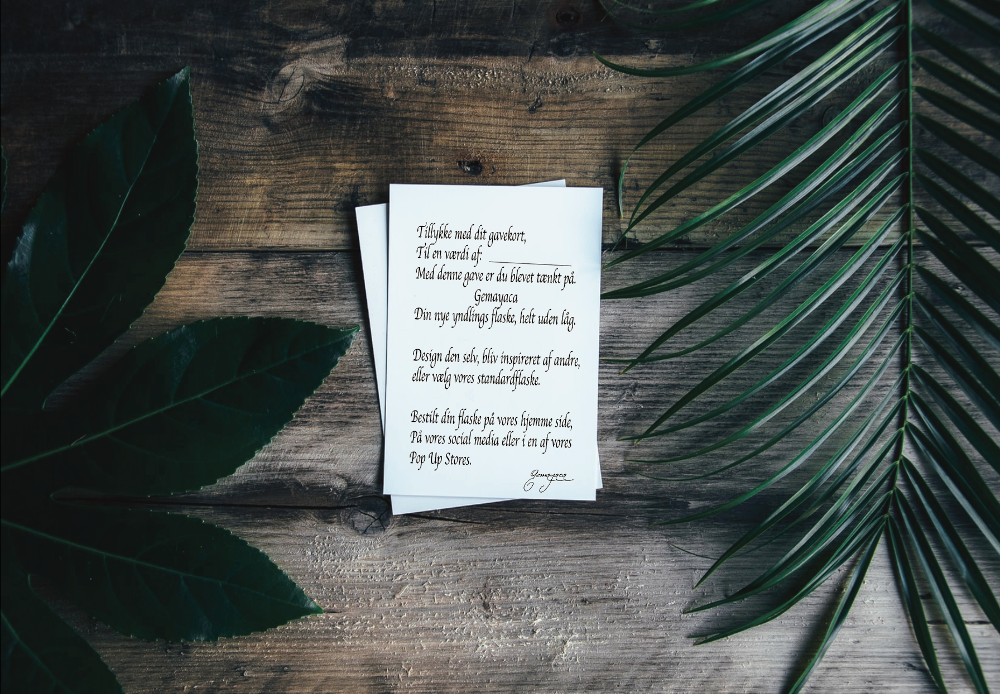

Standard flasken
300 kr,-
Med donationsmærke
310 kr,-
"Vi gør det mindre vand'skeligt for dig."
Vi har sat fokus på at hjælpe dig:
Med Gemayaca flasken, skal du aldrig mere åbne et låg, når det kommer til dit daglige væskeindtag.

Vores Flaske, kommer uden låg. Den har nemlig en indbygget sensor, der gør det nem for dig at drikke direkte af flasken uden at tænke videre over det. Det eneste du skal gøre er at sætte læberne op til flasken og hælde. Skal flasken fyldes sætter du fingeren op til sensoren og hælder din ynglings drikkelse i. Varmt som kold.
Den perfekte gave til dig og miljøet
Kender du en, der kunne bruge en god drikke oplevelse?
En der går op i teknologi, design eller nemme løsninger. Så er vores gavekort den perfekte Gave:
